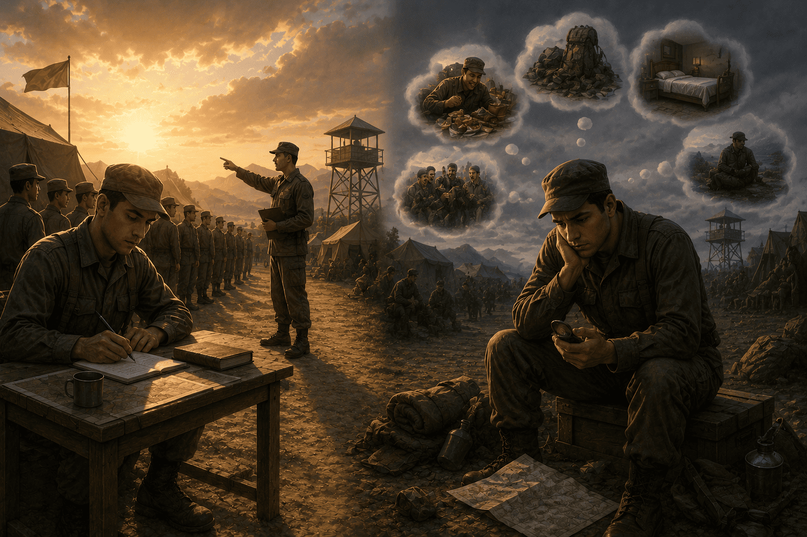
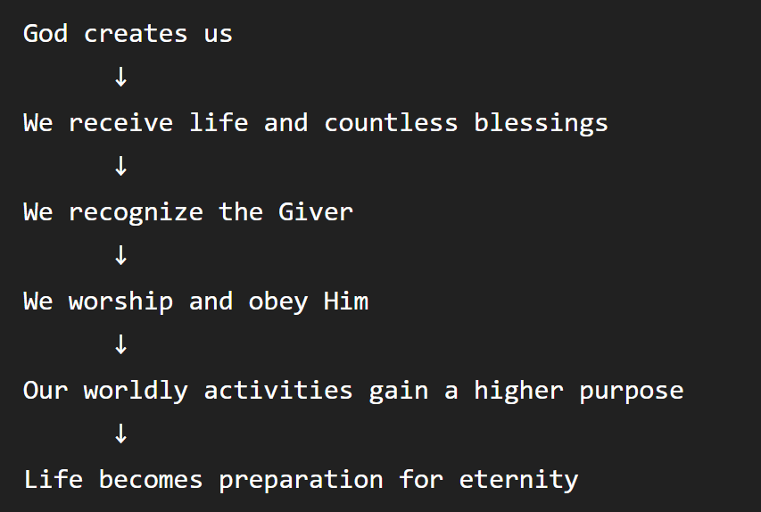

The Fifth Word of The Words by Imam Said Nursi develops the theme of the previous Words: what is the real purpose of human life ?
Its central argument is that human beings have been created with a fundamental duty:
To worship and recognize their Creator
Imam Nursi compares humanity to an army, imagine two soldiers:

The First Soldier
He understands that he is part of an army, he:
Because he knows his purpose, he can focus on his task.
The Second Soldier
He becomes distracted by everything around him.
Instead of concentrating on his duty, he starts worrying about:
He effectively forgets why he was enlisted.
Imam Nursi uses this to represent human beings.
According to Imam Nursi, we are not simply placed in the world to:
We have a higher purpose, our fundamental duty is:
The ordinary activities of life are important, but they should not make us forget our ultimate purpose.
Imam Nursi points out an interesting contradiction, people spend enormous amounts of time thinking about:
Yet they may regard worship as an interruption.
Nursi reverses this perspective.
He asks us to consider:
If we have been given an entire life, shouldn't some portion of it be devoted to the One who gave us that life ?
The world is temporary, human beings are like soldiers temporarily stationed here.
The important question is therefore not simply:
How comfortable can I make my stay ?
But:
What is my duty while I am here ?
This changes how we understand worldly life.
The Fifth Word teaches that:
Human beings are like soldiers temporarily stationed in this world, and their most important duty is to recognize and worship their Creator rather than becoming completely absorbed in temporary worldly concerns.
